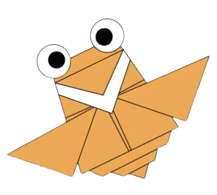

Stylish Origami Designs
........................................................................................................................
About Us
..............................................................
Support Us
.................................................................................................................
These Are Some Animal's Origami Designs...

Camel
Camels can completely shut their nostrils during sandstorms.
Camels have thick lips which let them forage for thorny plants other animals can’t eat.
Camels have three sets of eyelids and two rows of eyelashes to keep sand out of their eyes.
There are two types of camels: One humped or “dromedary” camels and two humped Bactrian camels.
...........................................................................................................................................................................................................................................................................................................................................

Chameleon
Chameleons are a very unique branch of the lizard group of reptiles.
Many species of chameleon have horn-like bumps or crests on their heads.
Chameleons live in warm varied habitats from rainforests through to deserts.
Chameleons have amazing eyes. The bulging upper and lower eyelids are joined and the pupil peaks out from a pinhole sized gap.
...........................................................................................................................................................................................................................................................................................................................................

Bear
Bears grieve deeply for others.
Bears are extraordinarily intelligent animals.
Some species of Asiatic bear build nests in the trees.
Bears have excellent senses of smell, sight and hearing.
...........................................................................................................................................................................................................................................................................................................................................

Piegion
Pigeons are highly sociable animals.
Pigeons have excellent hearing abilities.
Pigeons are incredibly complex and intelligent animals.
Pigeons are renowned for their outstanding navigational abilities.
...........................................................................................................................................................................................................................................................................................................................................

Giant Panda
Giant pandas are usually born in August.
Giant pandas are good at climbing trees and can also swim.
Giant pandas are "lazy", eating and sleeping make their day.
Giant pandas have carnivorous teeth, but they eat bamboo and fruit.
...........................................................................................................................................................................................................................................................................................................................................

Flying Cicada
Cicadas are not locusts.
Cicadas have one of the longest insect lifespans.
Cicadas inundate forests as a survival mechanism.
Cicada's lengthy life cycles may help them evade predators.